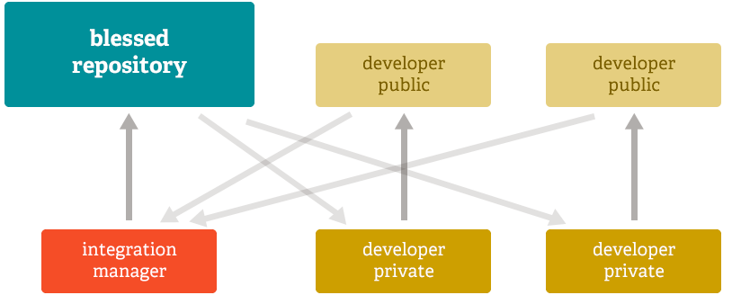

Welcome to 
So what does it mean to be distributed?
Speaking of workflows...
Centralized workflow

One example of a distributed workflow
The Linux kernel uses this one

But is Git better than Subversion?
Don't take my word for it...
All times are in seconds.
| Operation | Git | SVN | ||
|---|---|---|---|---|
| Commit Files (A) | Add, commit and push 113 modified files (2164+, 2259-) | 0.64 | 2.60 | 4x |
| Commit Images (B) | Add, commit and push 1000 1k images | 1.53 | 24.70 | 16x |
| Diff Current | Diff 187 changed files (1664+, 4859-) against last commit | 0.25 | 1.09 | 4x |
| Diff Recent | Diff against 4 commits back (269 changed/3609+,6898-) | 0.25 | 3.99 | 16x |
| Diff Tags | Diff two tags against each other (v1.9.1.0/v1.9.3.0 ) | 1.17 | 83.57 | 71x |
| Log (50) | Log of the last 50 commits (19k of output) | 0.01 | 0.38 | 31x |
| Log (All) | Log of all commits (26,056 commits - 9.4M of output) | 0.52 | 169.20 | 325x |
| Log (File) | Log of the history of a single file (array.c - 483 revs) | 0.60 | 82.84 | 138x |
| Update | Pull of Commit A scenario (113 files changed, 2164+, 2259-) | 0.90 | 2.82 | 3x |
| Blame | Line annotation of a single file (array.c) | 1.91 | 3.04 | 1x |
Joel on Software:
With distributed version control, the distributed part is actually not the most interesting part.
The interesting part is that these systems think in terms of changes, not in terms of versions.
That's a very zen-like thing to say, I know. Traditional version control thinks: OK, I have version 1. And now I have version 2. And now I have version 3.
And distributed version control thinks, I had nothing. And then I got these changes. And then I got these other changes.
It's a different Program Model, so the user model has to change.
...
If you come at Mercurial with a Subversion mindset, things will almost work, but when they don't, you'll be confused, unhappy, and unsuccessful, and you'll hate Mercurial.
Whereas if you free your mind and reimagine version control, and grok the zen of the difference between thinking about managing the versions vs. thinking about managing the changes, you'll become enlightened and happy and realize that this is the way version control was meant to work.
And here is the most important point, indeed, the most important thing that we've learned about developer productivity in a decade. It's so important that it merits a place as the very last opinion piece that I write, so if you only remember one thing, remember this:
When you manage changes instead of managing versions, merging works better, and therefore, you can branch any time your organizational goals require it, because merging back will be a piece of cake.
I can't tell you how many Subversion users have told me the following story: "We tried to branch our code, and that worked fine. But when it came time to merge back, it was a complete nightmare and we had to practically reapply every change by hand, and we swore never again and we developed a new way of developing software using if statements instead of branches."
With distributed version control, merges are easy and work fine. So you can actually have a stable branch and a development branch, or create long-lived branches for your QA team where they test things before deployment, or you can create short-lived branches to try out new ideas and see how they work.
This is too important to miss out on. This is possibly the biggest advance in software development technology in the ten years I've been writing articles here.
Or, to put it another way, I'd go back to C++ before I gave up on Mercurial.
If you are using Subversion, stop it. Just stop. Subversion = Leeches. Mercurial and Git = Antibiotics. We have better technology now.
Questions?